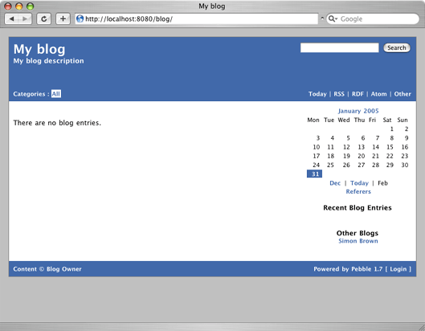

@header@

<table width="100%" cellspacing="0" cellpadding="8" class="item">
  <tr class="itemHeader">
    <td>
      Getting Started
    </td>
  </tr>

  <tr class="itemBody">
    <td>
      <p>
        This section explains how to get started with Pebble weblog and is a more indepth version of the <a href="tomcat-quick-start.html">quick start</a> guide.
      </p>

      <p>
      <b>Minimum Requirements</b>
      <ol>
        <li><a href="http://java.sun.com/j2se/downloads.html">Java 2 Platform, Standard Edition (J2SE) 1.4</a>
        <li>A JSP 1.2/Servlet 2.3 compatible web/application server such as <a href="http://jakarta.apache.org/tomcat/">Tomcat</a>, <a href="http://jetty.mortbay.org/jetty/index.html">Jetty</a> or <a href="http://www.caucho.com">Resin</a>, with access to setup new users and roles.
      </ol>
      </p>

      <p>
        <b>Deploying Pebble</b>
        <br /><br />
        Deploying Pebble is a simple process of extracting the WAR file and editing some configuration information. The following explanation illustrates this process on a UNIX-based platform with Jakarta Tomcat 4, installed in <code>$TOMCAT_HOME</code>. Installation on a Windows platform is pretty much identical.
        <ol>
          <li><b>Extract the WAR File</b> : After downloading Pebble, extract the <code>pebble.war</code> file from the Pebble distribution into your Tomcat installation, in a directory such as <code>$TOMCAT_HOME/webapps/blog</code>.<br /><br /></li>
          <li><b>Configure the Web Application</b> : Next, you need to tell Pebble some basic information about your blog. To do this, open up the $TOMCAT_HOME/webapps/blog/WEB-INF/classes/pebble.properties</code> file. There are 3 parameters that need modifying.
          <ul>
            <br />
            <li>The first of these is called <code>blog.dir</code> and this tells Pebble where on the filing system you would like to store your blog entries, the directory being created if necessary (the default is <code>${user.home}/blog</code>).<br /><br /></li>
            <li>The next parameter is called <code>blog.url</code> and this tells Pebble the URL from which you will be hosting your blog. Examples of this include http://localhost:8080/blog/ or http://www.somedomain.com/blog/. If left unset, Pebble will try to figure out the value, but explicitly setting this is recommended.<br /><br /></li>
            <li>The final parameter is called <code>blog.multiUser</code> and this tells Pebble you will be hosting a single user or multi-user blog (discussed later). The values for this parameter are <code>true</code> or <code>false</code> (the default).<br /><br /></li>
          </ul>
          </li>
          <li><b>Configure Web Application Security</b> : Pebble makes use of the standard Java Servlet security model in order that only blog owners and blog contributors can login and access the maintenance features. Atleast one user must be defined that is a member of the following roles:
          <br /><br /><ul><li>blog-owner</li><li>blog-contributor</li></ul>
          <br />
        The first of these roles allows users to configure many aspects of the blog, while the latter allows users to add, edit and delete blog entries. To set up this information with Tomcat using the default security realm, open the <code>$TOMCAT_HOME/conf/tomcat-users.xml</code> file and add in the following line.
        <br />
        <pre>  &lt;user username="someuser" password="password" roles="blog-owner,blog-contributor"/&gt;</pre>

        This example defines a user called someuser that is both a blog-owner and blog-contributor.

        In addition to these roles, there is another role called pebble-admin that is used when administering a Pebble multi-user installation. Details of this are discussed later.
          <br /><br /></li>
          <li><b>Testing the Installation</b> : With these steps complete, start the server and point your web browser to the URL where the web application has been deployed. If everything has worked, you should see a page like the following.
          <br /><br />
      </p>

      <p>
        You are now ready to customize your blog and start blogging.
      </p>
    </td>
  </tr>
</table>

@footer@